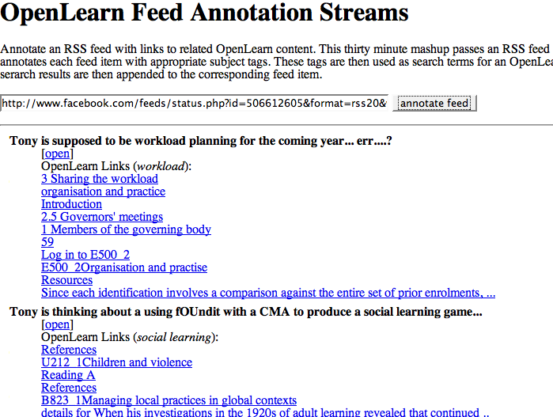

I posted just now/the other day* about an OpenLearn Feed Annotation Stream, that takes an RSS feed and annotates it with hopefully relevant links from OpenLearn. (You can try out the service with any RSS feed here: OpenLearn feed annotator.) Re-reading a post from Martin (Mo' Facebook), I notice he picked up on a thought of mine where I "suggest[ed] ways in which a status like function could be mined to aid learning and networking."
So here's a demo screenshot of how it might work, in part, using the feed from my Facebook Status as the basis for an OpenLearn Feed Annotation Stream.

If you have a Facebook account, you can find your status feed linked to from here: http://www.facebook.com/minifeed.php?status&id=nnnnnn, where nnnnnn is your Facebook ID number, which you can find in the URL of your Facebook profile page (http://www.facebook.com/profile.php?id=nnnnnn). So for example, here's my Facebook status feed.
*I'm at OU Residential a school in Bath for a week (ping me if you want to say hi and go for a pint!), so I'm queuing up a few posts so I can keep them dribbling out through the week. If someone beats me to this idea - well - this post was actually written about 10 mins after the previous post I made... ;-)
Posted by ajh59 at July 16, 2007 04:56 PM